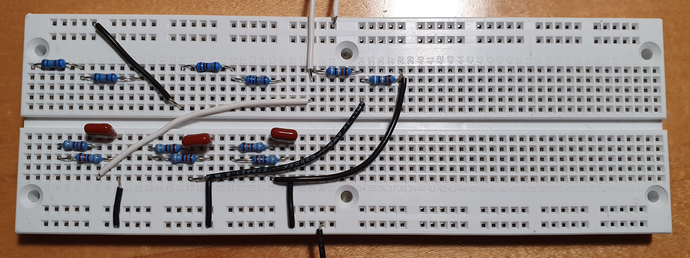
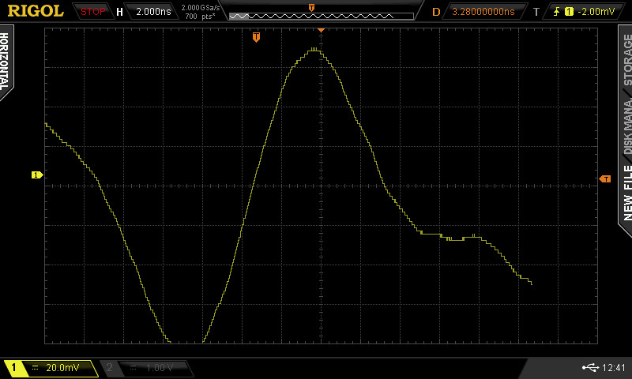
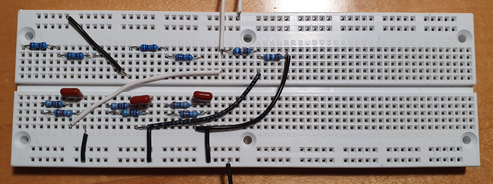
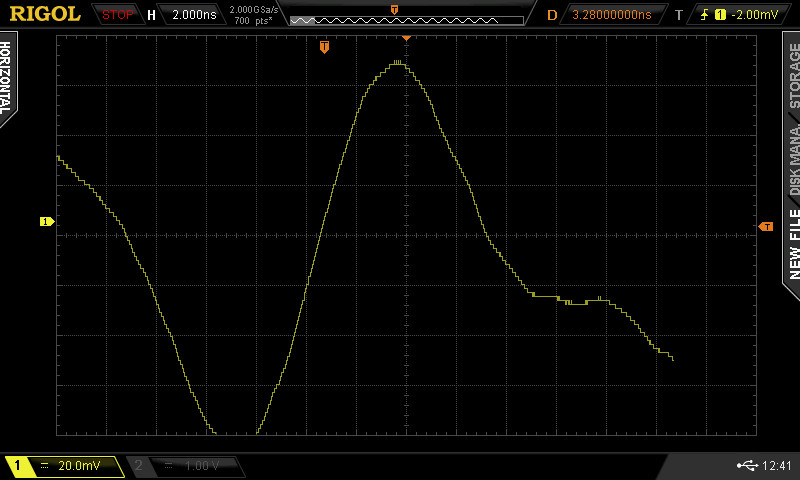

MOTION MODEL
Common EEG Waveforms
Within EEG signals, there are 10 common waveforms you can expect to see. Three of these waveforms correspond with epileptic seizures. As indicated in the following image, the three main waves present in the signal are sharp waves, spike waves, and spike-and-wave. These, common in seizure, waveforms are boxed in blue. Common waveforms for normal brain activity are boxed in red.

This image is a modified version of one shown in a presentation by Dr. Valja Kellerovà. It can be found on slide 7 at the following link: Image Source.
 


